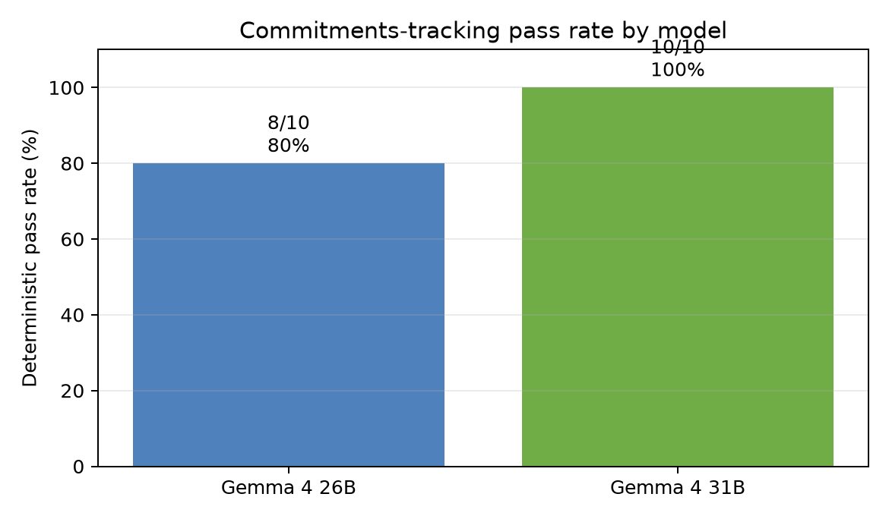
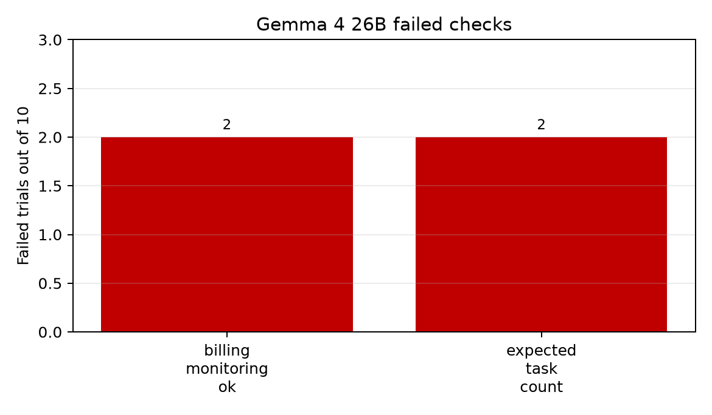

Client update and loss analysis
We built a Harbor knowledge-work task for evaluating whether an agent can keep a task board accurate from workplace conversation. The environment contains simulated Slack and Task Manager services exposed through terminal tools, a realistic instruction, a deterministic verifier, and an oracle solution.
The task asks the agent to identify outstanding commitments in Slack, reconcile them with the existing board, create missing tasks, assign the right owner, and avoid tasks for decoys such as FYIs, completed work, hypotheticals, and declined asks. The verifier writes a binary deterministic reward based on final state.
The target model, Gemma 4 26B through terminus-2, passed 8 of 10 trials for a deterministic pass rate of 80%. The comparison model, Gemma 4 31B, passed 10 of 10 trials for a deterministic pass rate of 100%.

Figure 1. Deterministic pass rate by model.
The weaker model reliably handled most explicit commitments but intermittently dropped the billing API monitoring follow-up. The stronger model captured the full required end state across all recorded trials.
Recommendation: use this eval as a compact regression test for operational commitment tracking, preserving deterministic reward as the authoritative success signal.
In one failing 26B trajectory, the agent created five of six genuine missing commitments and omitted billing API monitoring. It created onboarding -> alice, staging key -> priya, invoice -> nina, Initech -> maya, and Globex -> alice.

Figure 2. Failed deterministic checks for Gemma 4 26B.
The only non-zero target failure counts were billing_monitoring_ok (2) and expected_task_count (2). The gpt-4o-mini judge falsely scored that failing trial 1.0, so deterministic state checking remains the sole reward.
The stronger model captured all six genuine missing commitments in all ten trials. This contrast suggests that the failure is not generic tool use, but the harder act of noticing and preserving a threaded or implicit operational commitment.
The calibration arc moved from a saturated 100%/100% design to an unsaturated, discriminating task after adding decoys plus implicit and threaded commitments. Two unfair-verifier bugs were caught and fixed during calibration: staging-key exact matching and a cancellation check that inverted model ranking.
Harbor framing: the submitted task includes instruction.md, a Dockerized environment with Slack and Task Manager CLIs, a deterministic verifier that writes reward.json, and an oracle solution. The recorded runs used harbor run with terminus-2 and Gemma over OpenRouter.